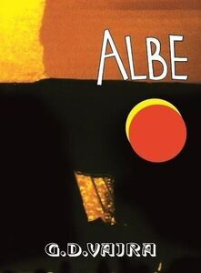

Trade Mark Journal No.2025/049 5 December 2025
WO0000001888055 (5,32,33)
Office of origin: European Union Intellectual Property Office (EUIPO)
Date of International Registration:8 April 2025
Date of designation in the UK:
8 April 2025

Yellow, red, orange, white and black.
- Class 5
- Tonic liquor containing herb extracts (homeishu).
- Class 32
- Beer and non-alcoholic beer; non-alcoholic beverages; non-alcoholic preparations for making beverages; barley wine [beer]; beer; beer-based beverages; beer wort; beer-based cocktails; beers enriched with minerals; black beer [toasted-malt beer]; bock beer; coffee-flavored beer; craft beers; dried hops for brewing beer; flavored beers; frozen hops for brewing beer; gluten free beer; grape ales; hop pellets for brewing beer; imitation beer; ipa (indian pale ale); kvass [non-alcoholic beverage]; low alcohol beer; lagers; malt beer; malt wort; non-alcoholic beer; non-alcoholic beer flavored beverages; pale ale; porter; shandy; saison beer; stout; wheat beer; aerated juices; bitter lemon; carbonated non-alcoholic drinks; cola; cola drinks; cream soda; colas [soft drinks]; dry ginger ale; fruit flavored soft drinks; ginger beer; lemonades; low-calorie soft drinks; non-alcoholic flavored carbonated beverages; non-alcoholic soda beverages flavoured with tea; root beer; tonic water [non-medicated beverages]; aerated fruit juices; aloe juice beverages; aloe vera juices; apple juice beverages; beverages consisting of a blend of fruit and vegetable juices; beverages consisting principally of fruit juices; blackcurrant juice; coconut-based beverages; concentrated fruit juice; cranberry juice; condensed smoked plum juice; fruit-based beverages; fruit drinks; fruit-flavoured beverages; fruit juice beverages; fruit juice concentrates; fruit nectars, non-alcoholic; fruit squashes; ginger juice beverages; grape juice beverages; grape juice; grapefruit juice; guava juice; iced fruit beverages; lemon squash; mango juice; melon juice; mixed fruit juice; organic fruit juice; orange squash; orange juice drinks; orange juice; non-alcoholic vegetable juice drinks; non-alcoholic grape juice beverages; non-alcoholic fruit juice beverages; must; part frozen slush drinks; watermelon juice; watercress juice beverages; vegetable smoothies; vegetable juices [beverages]; vegetable drinks; tomato juice [beverage]; smoothies containing grains and oats; smoothies; red ginseng juice beverages; pomegranate juice; pineapple juice beverages; soya-based beverages, other than milk substitutes; aerated water; bottled drinking water; aerated water [soda water]; carbonated mineral water; coconut water as a beverage; distilled drinking water; drinking water; drinking water with vitamins; flavoured mineral water; flavoured waters; fruit flavoured waters; functional water-based beverages; glacial water; mineral and aerated waters; lithia water; mineral water [beverages]; mineral enriched water [beverages]; mineral water (non-medicated -); nutritionally fortified water; preparations for making aerated water; purified drinking water; table waters; still water; soda water; seltzer water; spring water; water-based beverages containing tea extracts; waters [beverages]; blackcurrant cordial; concentrates for making fruit drinks; concentrates for use in the preparation of sports drinks; concentrates for use in the preparation of energy drinks; concentrates for use in the preparation of soft drinks; cordials; dilutable preparations for making beverages; essences for making beverages; essences for making flavoured mineral water [not in the nature of essential oils]; extracts for making beverages; extracts of hops for making beer; extracts of unfermented must; grape must, unfermented; hop extracts for use in the preparation of beverages; lemon juice for use in the preparation of beverages; lime juice cordial; lime juice for use in the preparation of beverages; malt syrup for beverages; mixes for making sorbet beverages; non-alcoholic essences for making beverages; non-alcoholic fruit extracts; non-alcoholic fruit extracts used in the preparation of beverages; orgeat; pastilles for effervescing beverages; powders for effervescing beverages; powders for making soft drinks; powders for the preparation of beverages; powders used in the preparation of coconut water drinks; powders used in the preparation of fruit-based beverages; preparations for making non-alcoholic beverages; squashes [non-alcoholic beverages]; starch-based dry mixes for beverage preparation; syrups and other non-alcoholic preparations for making beverages; syrups for beverages; syrups for lemonade; syrups for making beverages; syrups for making flavoured mineral waters; syrups for making non-alcoholic beverages; syrups for making fruit-flavored drinks; syrups for making soft drinks; syrups for making whey-based beverages; unfermented preserved must; alcohol free wine; aloe vera drinks, non-alcoholic; aperitifs, non-alcoholic; beverages containing vitamins; birch water; brown rice beverages other than milk substitutes; carbohydrate drinks; cider, non-alcoholic; cocktails, non-alcoholic; douzhi (fermented bean drink); energy drinks; energy drinks containing caffeine; energy drinks [not for medical purposes]; flavoured carbonated beverages; frozen carbonated beverages; frozen fruit-based beverages; fruit-based soft drinks flavored with tea; green vegetable juice beverages; guarana drinks; isotonic beverages; isotonic beverages [not for medical purposes]; juices; lemon barley water; limeade; maple water; mung bean beverages; non-alcoholic beer-based cocktails; non-alcoholic beverages containing vegetable juices; non-alcoholic beverages containing fruit juices; non-alcoholic beverages flavoured with coffee; non-alcoholic beverages flavoured with tea; non-alcoholic bitters; non-alcoholic cinnamon punch with dried persimmon (sujeonggwa); non-alcoholic cocktail bases; non-alcoholic dried fruit beverages; non-alcoholic drinks enriched with vitamins and mineral salts; non-alcoholic fruit cocktails; non-alcoholic fruit punch; non-alcoholic fruit vinegar beverages; non-alcoholic honey-based beverages; non-alcoholic malt drinks; non-alcoholic malt free beverages [other than for medical use]; non-alcoholic punch; non-alcoholic rice punch (sikhye); non-carbonated soft drinks; nut and soy based beverages; nutritionally fortified beverages; non-alcoholic sparkling fruit juice drinks; oat-based beverages [not being milk substitutes]; orange barley water; protein drinks; protein-enriched sports beverages; quinine water; ramune (japanese soda pops); rice-based beverages, other than milk substitutes; sarsaparilla [non-alcoholic beverage]; sherbets [beverages]; smoked plum beverages; soft drinks; sorbets in the nature of beverages; sports drinks; sports drinks containing electrolytes; vitamin enriched sparkling water [beverages]; vitamin fortified non-alcoholic beverages; waters; whey beverages.
- Class 33
- Alcoholic beverages (except beer); alcoholic essences and extracts; alcoholic preparations for making beverages; preparations for making alcoholic beverages; cider; dry cider; sweet cider; alcoholic aperitif bitters; alcoholic beverages containing fruit; alcoholic beverages of fruit; alcoholic cocktail mixes; alcoholic cocktails containing milk; alcoholic cocktails in the form of chilled gelatins; alcoholic coffee-based beverage; alcoholic energy drinks; alcoholic fruit cocktail drinks; alcoholic punches; alcoholic tea-based beverage; alcopops; beverages containing wine [spritzers]; cocktails; Japanese sweet rice-based mixed liquor (shiro-zake); liquor-based aperitifs; pre-mixed alcoholic beverages, other than beer-based; prepared alcoholic cocktails; prepared wine cocktails; rum-based beverages; rum punch; sangria; wine-based aperitifs; wine-based beverages; wine coolers [drinks]; wine punch; absinthe; aguardiente [sugarcane spirits]; aquavit; arrack [arak]; baijiu [Chinese distilled alcoholic beverage]; blended whisky; brandy; cachaca; cherry brandy; Chinese brewed liquor (laojiou); Chinese mixed liquor (wujiapie-jiou); Chinese spirit of sorghum (Gaolian-Jiou); Chinese white liquor (baiganr); cooking brandy; digestifs [liqueurs and spirits]; distilled beverages; distilled spirits of rice (awamori); fermented spirit; flavored tonic liquors; gin; ginseng liquor; hulless barley liquor; Japanese liquor containing herb extracts; Japanese liquor flavored with pine needle extracts; Japanese liquor flavored with Japanese plum extracts; Japanese regenerated liquors (naoshi); Japanese white liquor (shochu); kirsch; malt whisky; potable spirits; red ginseng liquor; rum; schnapps; shochu (spirits); soju; sorghum-based Chinese spirits; spirits [beverages]; sugar cane juice rum;; tonic liquor containing mamushi-snake extracts (mamushi-zake); tonic liquor flavored with Japanese plum extracts (umeshu); tonic liquor flavored with pine needle extracts (matsuba-zake); vodka; whisky; acanthopanax wine (ogapiju); alcoholic wines; black raspberry wine (bokbunjaju); blackberry wine; cooking wine; dessert wines; fortified wines; fruit wine; grape wine; Japanese sweet grape wine containing extracts of ginseng and cinchona bark; low-alcoholic wine; makkoli; mulled wines; natural sparkling wines; piquette; plum wine; red wine; rice wine; rose wines; sparkling fruit wine; sparkling grape wine; sparkling red wines; sparkling white wines; sparkling wines; still wine; strawberry wine; sweet wines; table wines; vermouth; waxberry wine; white wine; yellow rice wine; alcoholic essences; alcoholic extracts; extracts of spiritous liquors; fruit extracts, alcoholic; alcoholic carbonated beverages, except beer; alcoholic egg nog; alcoholic jellies (term considered too vague by the International Bureau pursuant to Rule 13 (2) (b) of the Regulations); alcoholic seltzers; anise [liqueur]; anisette [liqueur]; aperitifs; aperitifs with a distilled alcoholic liquor base; bitters; blackcurrant liqueur; coffee-based liqueurs; cream liqueurs; Curaçao; flavoured brewed alcoholic malt beverages, except beers; grain-based distilled alcoholic beverages; herb liqueurs; hydromel [mead]; liqueurs; low alcoholic drinks; nira [sugarcane-based alcoholic beverage]; peppermint liqueurs; perry; pre-mixed alcoholic beverages; rice alcohol; sake; sake substitutes; sugarcane-based alcoholic beverages; wine.
G.D. VAJRA DI VAIRA ALDO